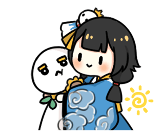
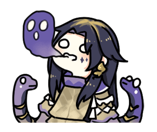
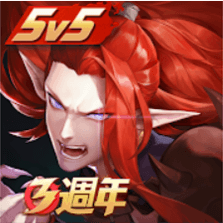

遊戲介紹
故事背景
在日本平安時代，原本應該在陰界的妖怪們現身人間，並製造各種騷亂為禍人間。陰陽師是日本以陰陽五行思想掌管天文、占卜，使用咒術的法師，能役使妖，收之為「式神」供己差遣。陰陽師們利用自身能力，維持著陰陽兩界的平衡。
遊戲特色
- 戰鬥系統：回合制遊戲，藉由式神等級和裝備決定其出手順序、攻擊力、生命值等。招式施展則需消耗「鬼火」，鬼火經過一定回合數回復一定數量。戰鬥時除晴明以外可攜帶三至五名式神進行戰鬥。一般已己方或敵方全滅為結束，勝利可獲得相應經驗和獎勵。
- 劇情：除戰鬥換取素材為角色升級，陰陽師有許多主線與支線劇情，讓玩家可以一邊享受劇情，一邊體驗戰鬥的快感。
- 成就系統：任務分為每日任務和成就。每日完成指定任務即可獲得每日任務獎勵，完成一定數量可獲得額外獎勵。成就任務須以特定條件完成，以完成一次為限，完成可獲得相應獎勵。
- 式神召喚：於召喚頁面進行。分為廁紙、藍票、勾玉和現世符咒。廁紙僅出N卡，低機率可獲得R卡。藍票、勾玉、現世符咒皆可召喚R、SR、SSR及SP式神。現世符咒需開啟相機功能，並拍攝指定圖案即可召喚。另外一種召喚式神的方式是收集該式神碎片，收集到指定數量即可召喚。式神碎片可於百鬼夜行或陰陽寮祈願獲得。
- 公會系統：玩家可選擇自己創建或加入陰陽寮。活動定期會連動陰陽寮，全寮獲得積分可為成員換取相應獎勵。寮內可以進行祈願碎片、公會戰，定期也會以寮的名義購買禮包，換取獎勵給寮內成員。
- 升級系統：藉由將式神升級，使其戰力提升。
- 覺醒系統：收集足夠素材可以覺醒式神，覺醒後的式神可以獲得新技能或增強技能能力，同時解鎖傳記功能和外觀功能。藉由完成指定任務，可開啟傳記並閱讀該式神部分故事。於商店購買或活動獲得的外觀可以在覺醒後為式神穿戴。
- 御魂：能夠強化式神的各項能力值，所有式神皆可以裝備至多6個御魂，隨著種類的不同會有著不同的加成。御魂分為6個方位（分別為壹、貳、叄、肆、伍及陸）。每一個方位只能裝備1個同位置的御魂，不同方位的御魂有著不同的主屬性，可進一步強化來讓能力值提升，每一方位和每一星等的御魂最多只能強化至+15。每強化3的倍數，就有機率除了強化主屬性外，還隨機開啟第二排後的「副屬性」，副屬性不論方位皆為隨機出現，至多出現5排能力，同一種的能力有可能重複出現，而越高等的御魂需要消耗更多其他的御魂及金幣來強化。每一種的御魂皆有所謂的「套裝效果」，每裝備兩個相同種類的御魂(方位不限)即可獲得指定屬性的加成或能力；而裝備四個相同種類的御魂（方位不限），除了能獲得指定的屬性，還能開啟專屬的御魂套裝效果，每個裝備中的御魂星等高低及強化不影響其套裝能力。
相關遊戲
《決戰！平安京》 一款移動端MOBA類遊戲，與傳統MOBA類似。基本玩法是擊殺敵人並與隊友一起或獨自摧毀敵方的大營或使其投降。玩家進行遊戲時需要用手指拖拽螢幕左下角的搖杆和各種技能按鈕來操控式神將其技能釋放。
《陰陽師：百聞牌》 卡牌對戰類游戲，在遊戲中將面對其他玩家或AI，進行1V1的牌局對決，我方選擇式神為我方戰鬥，使用各種各樣的卡牌進行博弈，擊殺敵方牌手獲得對局勝利。